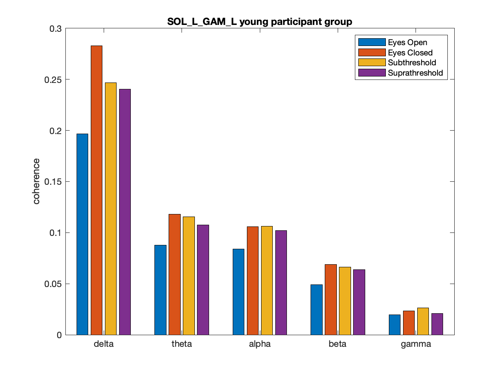
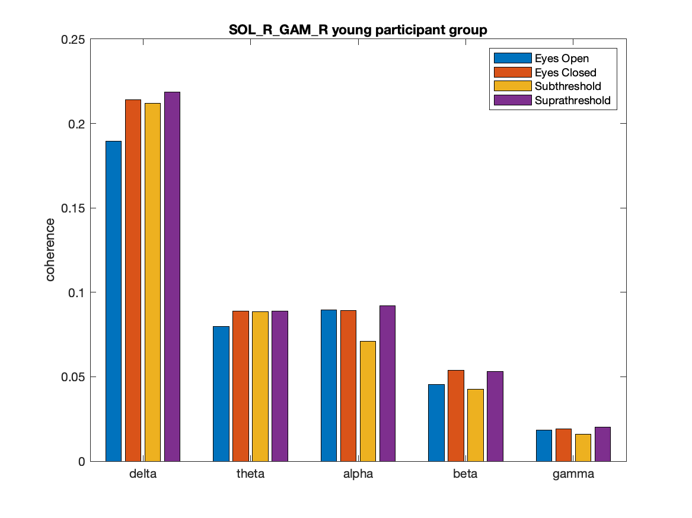
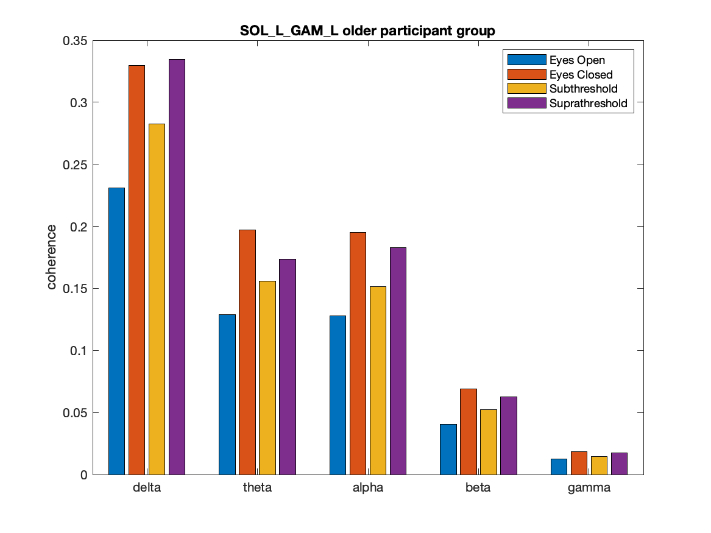
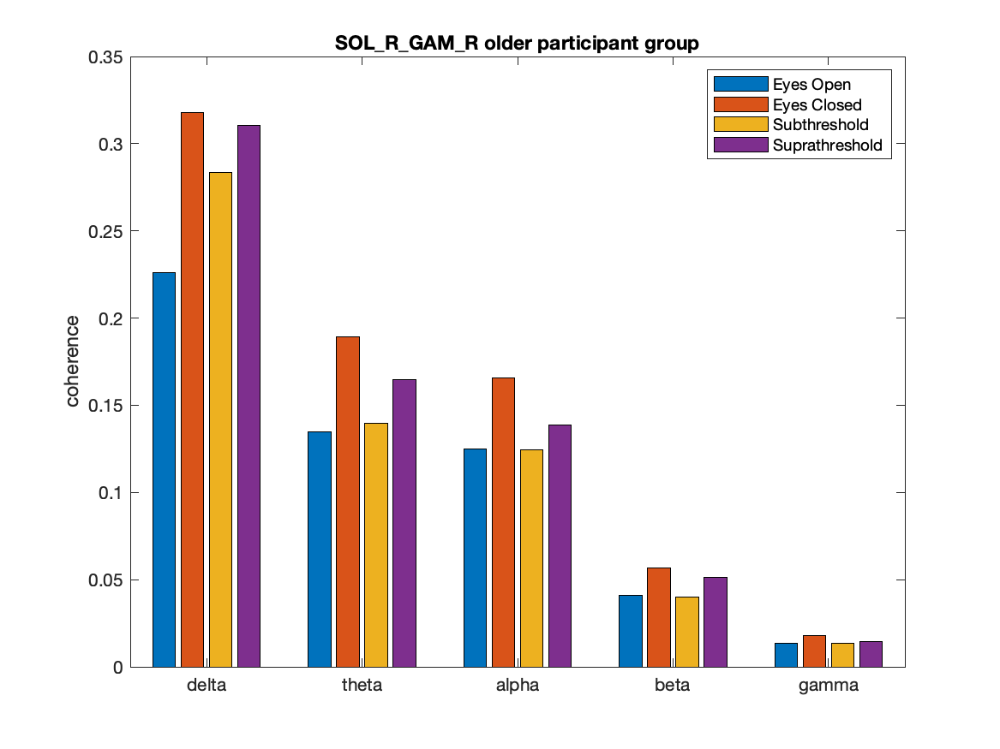

Exploring the Impact of Auditory Noise Stimulation on the Postural Stability of Elderly Individuals
A study of 100 participants investigating whether playing barely inaudible white noise through headphones improves balance in elderly people, using muscle activity and force measurements to quantify the effect.
Background
Balance depends on the brain continuously integrating information from three sources: vision, the inner ear, and touch and pressure signals from the body. As people age, the reliability of these signals decreases, which is why fall risk rises sharply in older adults. Falls are one of the leading causes of injury in elderly populations.
Research into a phenomenon called stochastic resonance suggests that adding a small amount of noise to a weak signal can actually make it easier to detect. Applied to balance, the idea is that a barely inaudible sound might enhance the body's sensitivity to its own postural signals, improving stability without the person being consciously aware of it. The effect only works below the hearing threshold, louder noise provides no benefit. Previous studies tested this using vibrations under the feet. This project asked whether the same effect can be achieved with auditory white noise.
A secondary question was whether older individuals, who have lower baseline stability and therefore more room for improvement, benefit more than younger individuals.
Experiment & Methods
100 participants (50 elderly, 50 young) stood quietly for one minute under each of four conditions. Balance was measured using a force plate that tracks how the body's weight shifts during standing, and muscle activity was recorded from 16 electrodes placed on the leg muscles.
All signals were cleaned to remove electrical interference and movement artefacts, then two types of analysis were performed.
Sway analysis: Six parameters were extracted from the force plate data, capturing how much and how fast the body shifts during standing. Differences between conditions were tested with non-parametric statistical tests.
Muscle synchronisation analysis: The degree of synchronisation between muscle pairs and between each muscle and the body's sway pattern was measured. High synchronisation suggests the body is working harder to actively compensate for instability, a reduction under noise indicates more automatic, efficient balance control.
Results
Sway results: In elderly participants, subthreshold noise significantly reduced sway speed and path length in all measured directions (all p < 0.02). The same reductions were present but smaller and often not statistically significant in younger participants, consistent with the expectation that those who struggle more with balance have more room to benefit.
Muscle synchronisation results: The eyes-closed condition produced the highest synchronisation between muscles, while eyes-open produced the lowest. Subthreshold noise reduced synchronisation compared to the eyes-closed baseline in elderly participants, most notably in the calf muscles, which play a central role in front-to-back balance.
Lower muscle synchronisation under subthreshold noise means the body is maintaining balance more efficiently, with less active muscular effort. Suprathreshold (audible) noise produced notably weaker effects, confirming that the benefit comes from the stochastic resonance mechanism rather than simply the presence of sound.
Older participants showed higher baseline muscle synchronisation overall, suggesting that increased muscular coordination effort is a characteristic feature of how the body compensates for reduced sensory reliability with age.
The plots below show the degree of synchronisation between two key calf muscles (Soleus and Gastrocnemius) across all four conditions, shown separately for young and older participants and for the left and right leg. These muscles are the primary drivers of front-to-back balance control.



